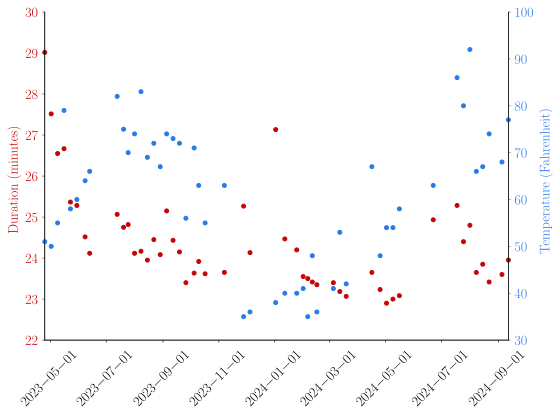

Running the Harvard stadium
May 23, 2024
My friends and I took the habit to run the stairs at the Harvard stadium.
The principle is simple: walk (or run!) up the big steps and down the small ones every row (37 times).
I record my time every week to keep track of my progress:

We can observe a few trends:
- the time improves when I went consistently (high density of points along the time axis)
- not going for a few weeks resulted in higher times
- there is some plateau time that I probably won't cross if I keep doing it this way
- temperature seems to be a factor of performance.